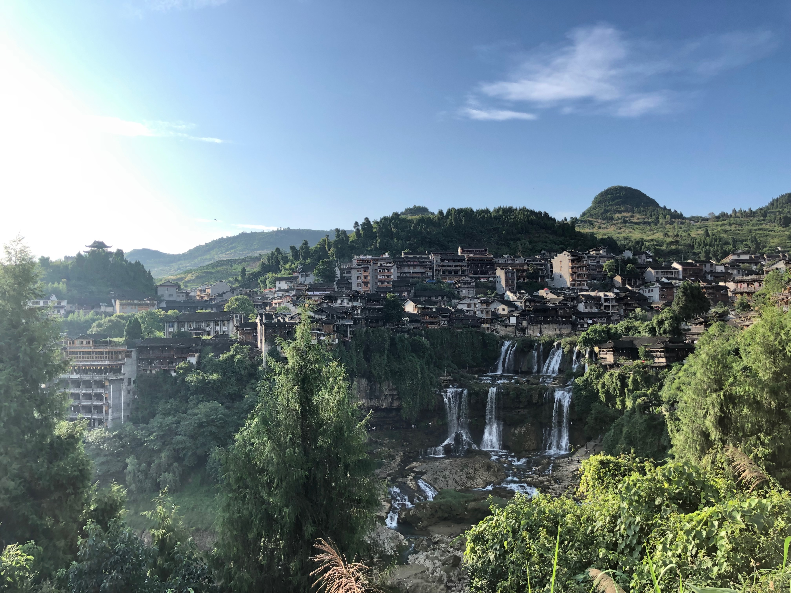
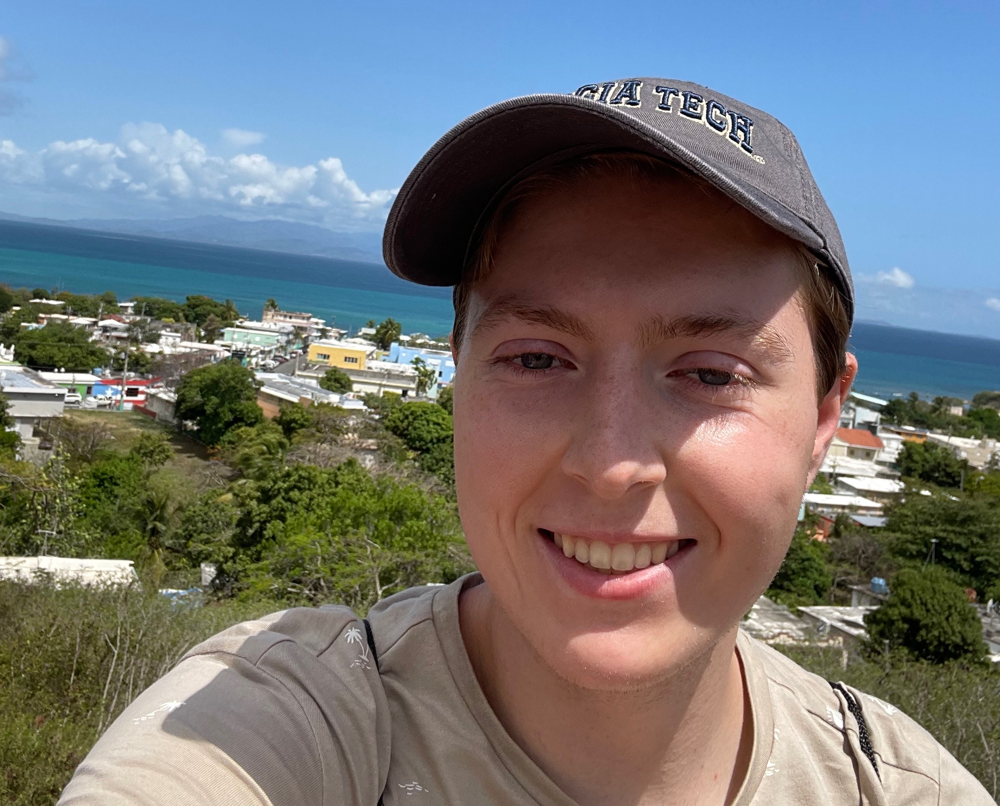

My Hobbies
A list of the passtimes I enjoy.
Traveling
Xiangxi, a small town in the Hunan province in China
China
Traveling is a passion I have had the fortune of enjoying for a long time. Whether it was a road trip to a city on the East coast or taking a 16-hour flight to the other side of the world, I always loved the idea of visiting and exploring a new place. In the Summer of 2019 at age 15, I was given the opportunity to travel with my friend and his dad to China. It was a challenging and life changing experience since the only person who spoke Mandarin and English fluently was my friend. I spent 16 days traveling around the country from their home province in Fujian to Shanghai, even inland to Hunan. It was an amazing experience that gave me a global perspective that has changed the way I see the world.
A picture of myself with the town Isabel II in the background, a town on the island of Vieques off the Coast of Puerto Rico
Puerto Rico
Being Puerto Rican, this was a trip I wanted to do for a long time, so when I heard that there was a 5-week study abroad in Puerto Rico I jumped on the opportunity to go. We studied Latin American Music and Iboamerican Cities at the University of Puerto Rico Rio Piedras. It was a lot of work, each day we would have classes, homework, and excursions to places all over the island. However, it was well worth the work and my Spanish improved a lot. Moreover, I was able to connect to a culture that was mostly lost due to the practices of assimilation at the time my family immigrated to the US.
Camping
Scouting is the most likely origin of my love for traveling and exploring, I did Scouting for 10 years and achieved the rank of Eagle Scout in 2020. I loved going on a different excursion to a different location every month and getting to explore a new place. We would travel up and down the New England States and because of all my time spent camping I have a large appreciation for nature as well as a desire to maintain our ecosystem so others can enjoy it.